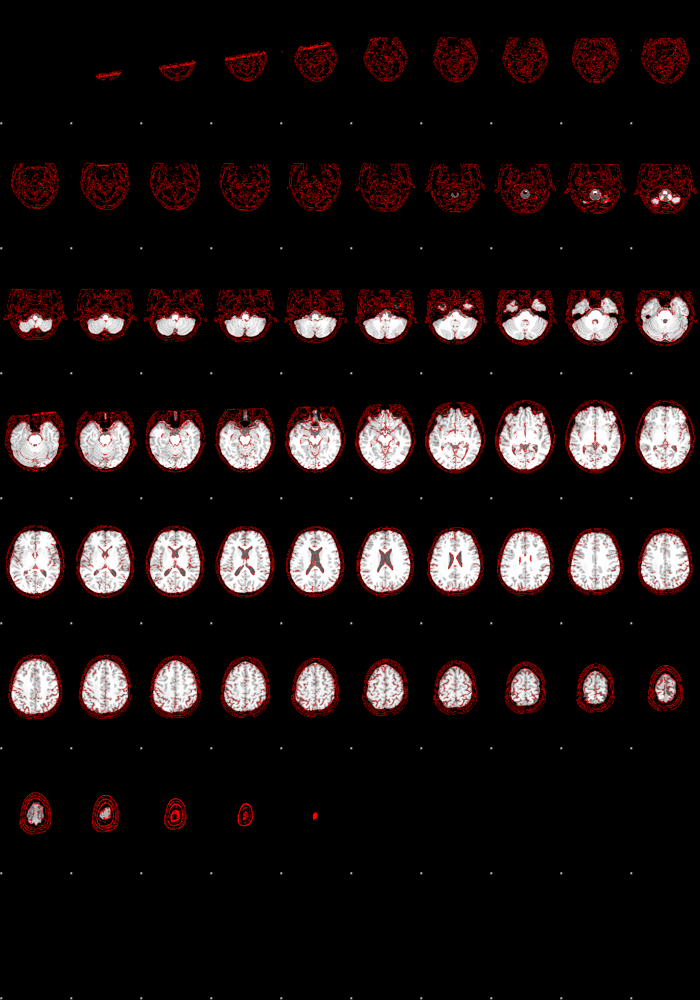

{'Modality': 'MR', 'MagneticFieldStrength': 3, 'ImagingFrequency': 123.254, 'Manufacturer': 'Siemens', 'ManufacturersModelName': 'Prisma', 'InstitutionName': 'Donders Centre for Cognitive Neuroimaging', 'InstitutionalDepartmentName': 'Department', 'InstitutionAddress': 'Kapittelweg 29,Nijmegen,Gelderland,NL,6525EN', 'DeviceSerialNumber': '66068', 'StationName': 'PRISMA', 'BodyPartExamined': 'BRAIN', 'PatientPosition': 'HFS', 'ProcedureStepDescription': 'MR session 01', 'SoftwareVersions': 'syngo MR E11', 'MRAcquisitionType': '3D', 'SeriesDescription': 't1_mprage_sag_iso_0.8LARGEFOV', 'ProtocolName': 't1_mprage_sag_iso_0.8LARGEFOV', 'ScanningSequence': 'GR\\IR', 'SequenceVariant': 'SK\\SP\\MP', 'ScanOptions': 'IR', 'SequenceName': '*tfl3d1_16ns', 'ImageType': ['ORIGINAL', 'PRIMARY', 'M', 'ND', 'NORM'], 'NonlinearGradientCorrection': False, 'SeriesNumber': 13, 'AcquisitionTime': '10:15:22.867500', 'AcquisitionNumber': 1, 'ImageComments': 'Image quality: high', 'SliceThickness': 0.8, 'SAR': 0.0712243, 'EchoTime': 0.00264, 'RepetitionTime': 2.2, 'SpoilingState': True, 'InversionTime': 1.1, 'FlipAngle': 11, 'PartialFourier': 1, 'BaseResolution': 320, 'ShimSetting': [3628, 2282, -2981, 626, 133, -188, 287, 25], 'TxRefAmp': 218.585, 'PhaseResolution': 1, 'ReceiveCoilName': 'Head_32', 'ReceiveCoilActiveElements': 'HEA;HEP', 'PulseSequenceDetails': '%SiemensSeq%\\tfl', 'RefLinesPE': 46, 'CoilCombinationMethod': 'Adaptive Combine', 'ConsistencyInfo': 'N4_VE11C_LATEST_20160120', 'MatrixCoilMode': 'GRAPPA', 'PercentPhaseFOV': 125, 'PercentSampling': 100, 'PhaseEncodingSteps': 399, 'AcquisitionMatrixPE': 400, 'ReconMatrixPE': 400, 'ParallelReductionFactorInPlane': 3, 'PixelBandwidth': 170, 'DwellTime': 9.2e-06, 'ImageOrientationPatientDICOM': [0.0118235, 0.993402, 0.11407, -0.000446714, 0.114083, -0.993471], 'ImageOrientationText': 'Sag>Cor(0.7)>Tra(0.1)', 'InPlanePhaseEncodingDirectionDICOM': 'ROW', 'ConversionSoftware': 'dcm2niix', 'ConversionSoftwareVersion': 'v1.0.20220720', 'Defaced': True, 'SkullStripped': True}